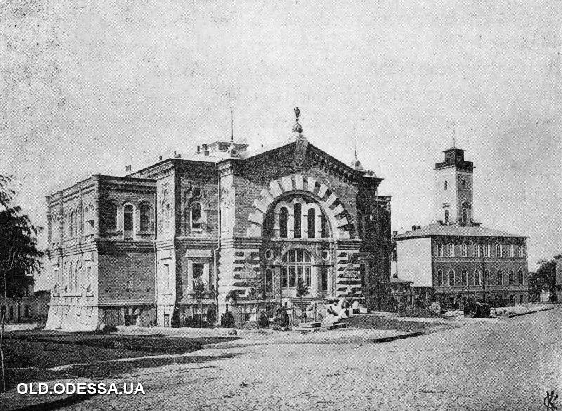
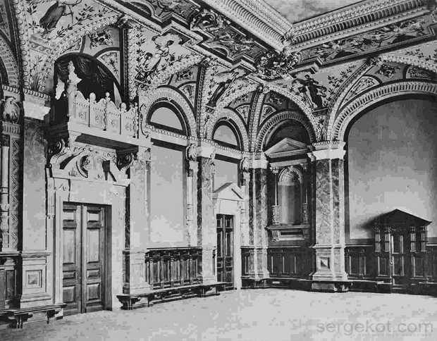
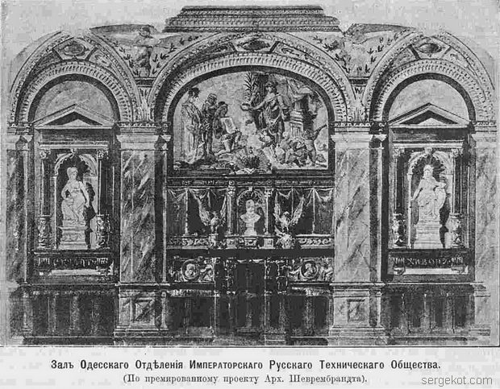
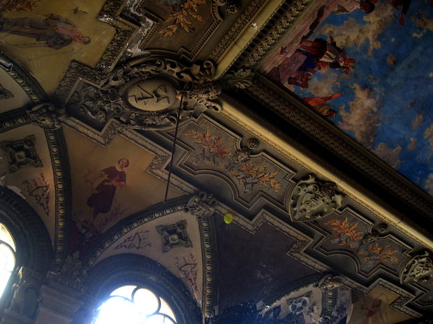

ЗДАНИЯ
Здание, где прошла первая лекция Одесского политехникумаЗдание Русского Технического Общества в Одессе
Здание РТО, в котором произошло открытие Одесского политехнического института 18 сентября 1918 года, а также в течение 3-х месяцев проводились занятия (ул. Новосельского, 4)
Интерьер здания РТО
 